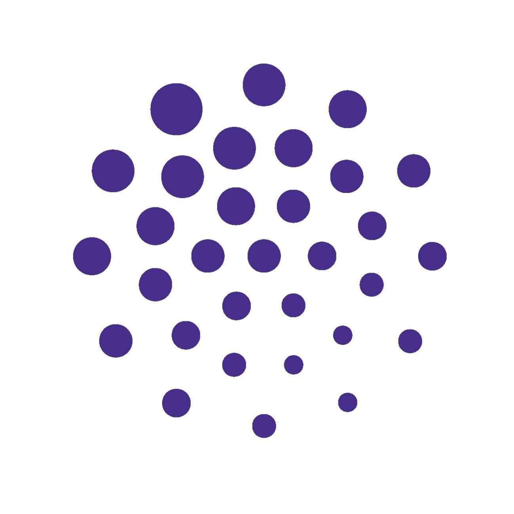
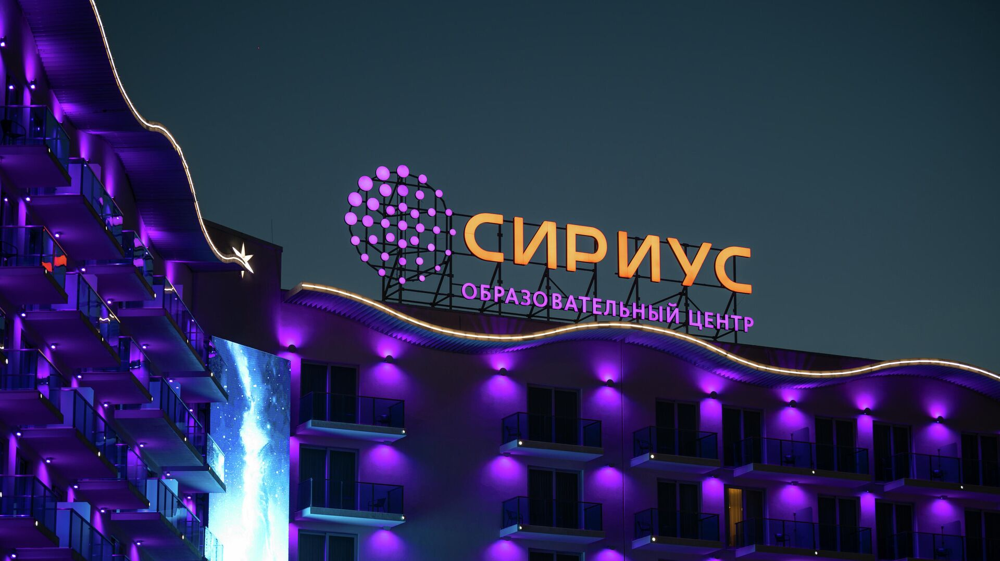

| Количество посетителей | Видео из столовой | Меню |  |
Общая информация:"Сириус" - образовательный центр поддержки одарённых детей в России. Он был создан в 2015 году образовательным фондом "Талант и успех" по инициативе президента России Владимира Путина на базе Олимпийского парка. Проезд и пребывание в "Сириусе" для детей бесплатные.  |